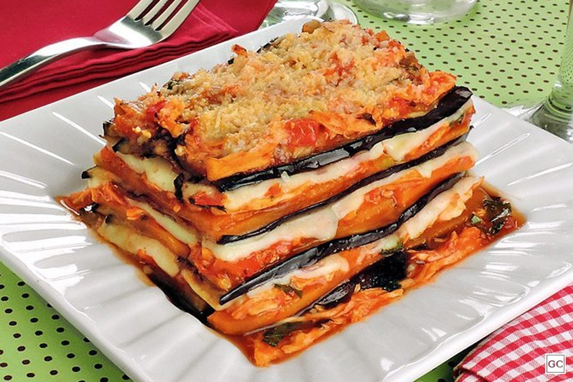

4 xícaras (chá) de NATURE´S HEART® Bebida Vegetal de Aveia
1 pitada de noz-moscada
1 colher (chá) de sal
Molho de tomate
1 colher (sopa) de azeite
1 colher (sopa) de azeite
1 dente de alho picado
4 tomates picados
1 colher (chá) de sal
1 pitada de pimenta-do-reino
1 colher (sopa) de manjericão fresco
Montagem
berinjelas médias fatiadas no sentido do comprimento
Modo de Preparo
Em uma panela, aqueça o azeite, junte a farinha de trigo e mexa, rapidamente para não empelotar, até dourar.
Acrescente a Bebida NESFIT aos poucos, sem parar de mexer, a noz-moscada e o sal.
Cozinhe, mexendo sempre, por cerca de 10 minutos em fogo baixo ou até a mistura adquirir consistência cremosa. Reserve.
Em uma panela, aqueça o azeite e refogue a cebola e o alho.
Junte os tomates, o sal, a pimenta-do-reino e cozinhe por cerca de 10 minutos, com a panela tampada ou até os tomates murcharem. Acrescente o manjericão e misture.
Montagem
Em uma frigideira antiaderente, grelhe rapidamente as fatias berinjela com 1 pitada de sal e reserve.
Em um refratário médio, coloque uma porção do molho branco e cubra com uma camada de berinjela.
Repita o procedimento, finalizando com o molho de tomate.
Leve ao forno médio-alto (200°C), preaquecido, por cerca de 15 minutos. Sirva.

Encontrou problemas para fazer essa receita ? Entre em contato com o site info@tudogostoso.com.br